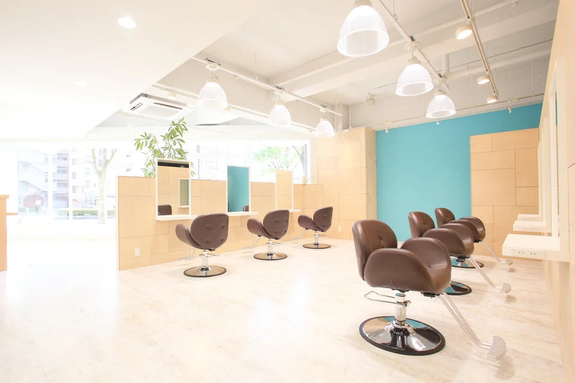
サロンの写真をもっと見る
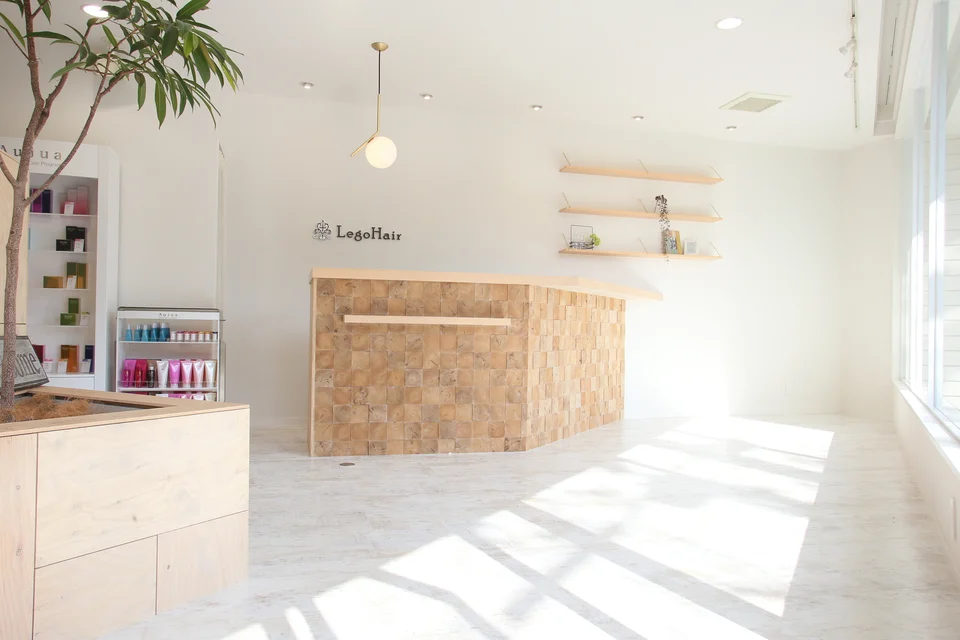
スタイリスト・アシスタント募集
大阪狭山市・富田林市・堺市
転職をお考えの美容師の方へ
お客様とじっくり話せる時間がほしい。
カットや提案の技術を、もっと身につけたい。
仕事は続けたいけれど、
勤務時間や休日も見直したい。
転職を決める前でも、見学やご相談を受け付けています。
気になることを、気軽にお聞きください。
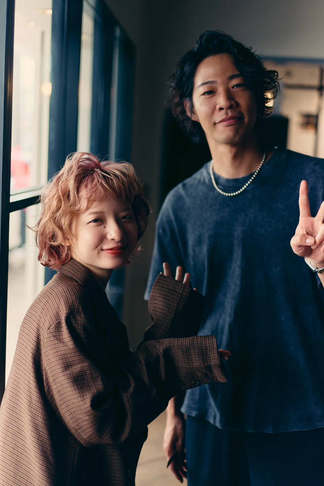
勤務時間と休日
完全週休2日制。勤務時間を短くしたい方には、準社員制度もあります。
111
DAYS年間休日 / 完全週休2日制18:30
LEAVING TIME正社員の平均退社時間24.5万〜27万＋歩合給＋能力給
MONTHLY SALARYsalon LH / 正社員スタイリスト月給平均退社時間は、毎日の退社時刻を保証するものではありません。職種別の勤務条件は下記をご確認ください。
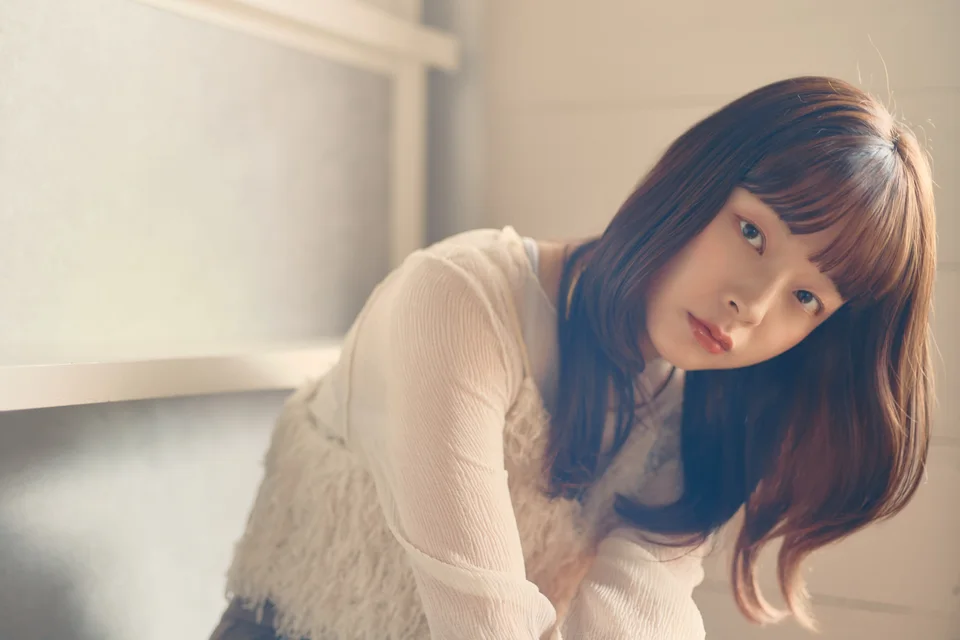
子育てなどで
フルタイム勤務が
難しい方へ。
富田林・金剛・堺



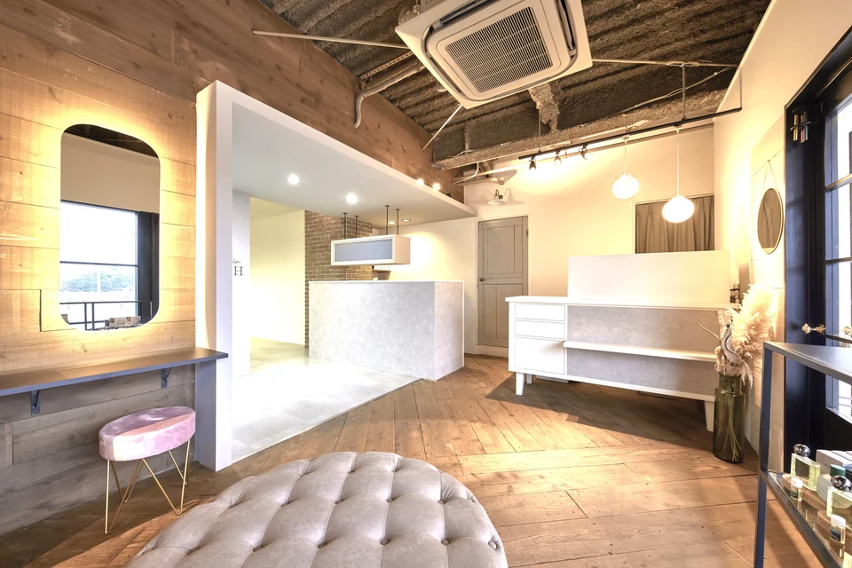
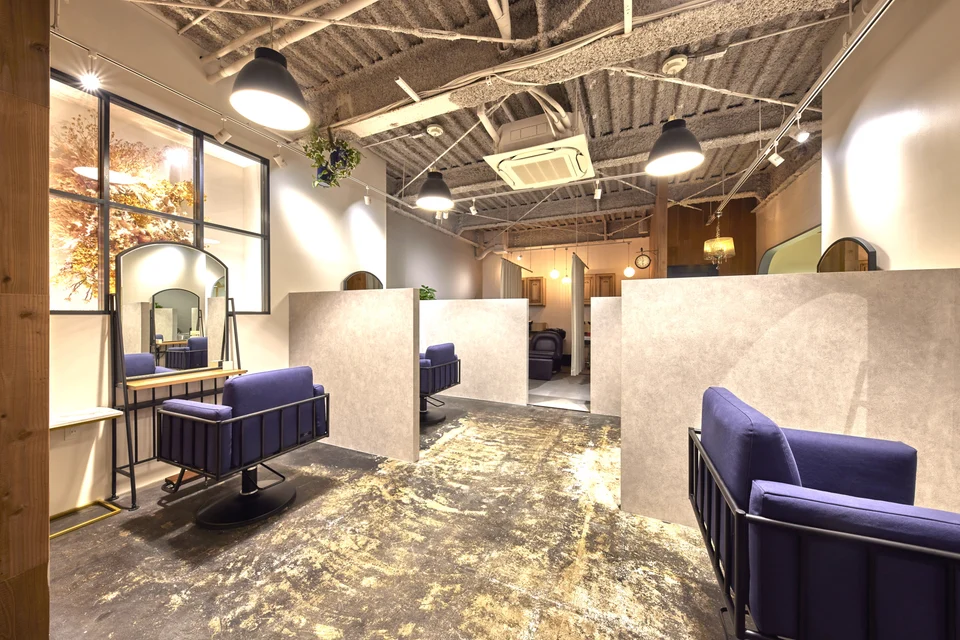
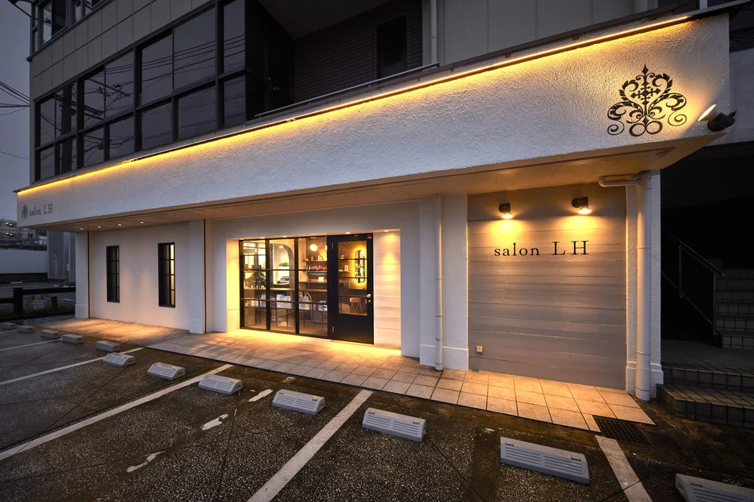

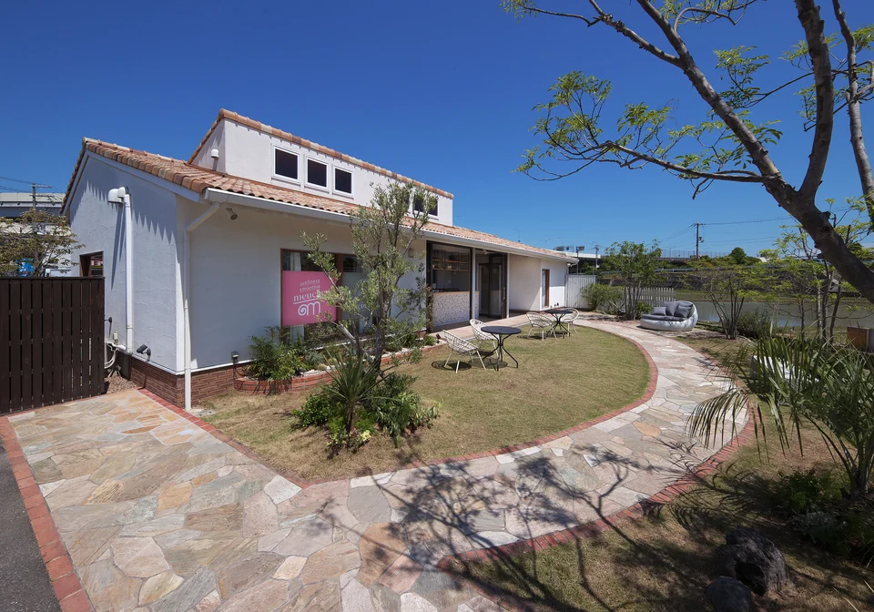
店舗ごとの募集状況や配属については、相談時にご確認ください。

接客とサロンの環境
半個室の店舗では、周りを気にせず
髪の悩みや希望を伺えます。
カウンセリングで伺った内容をもとに、
髪質や普段のお手入れに合わせて
スタイルやケアをご提案します。
LEGOHAIRの好印象プロデュース
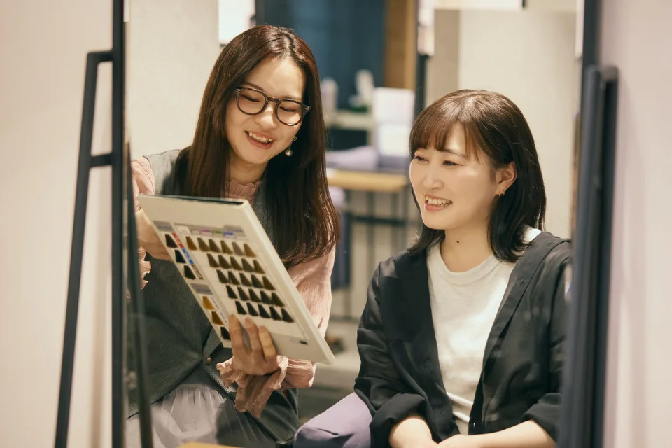
似合う理由を、
お客様に説明できるように。
顔立ち・パーソナルカラー・骨格・髪質をもとに、
似合う髪型や色を考えます。
カウンセリングや提案に役立つ知識を学べます。

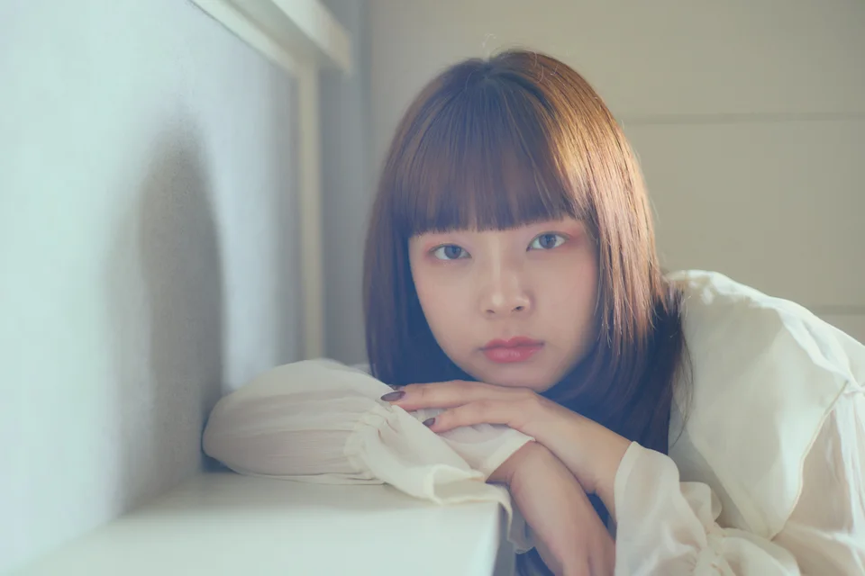

教育・研修
カウンセリングや似合わせ、新しい美容技術を学び、
日々の接客や施術に取り入れていきます。

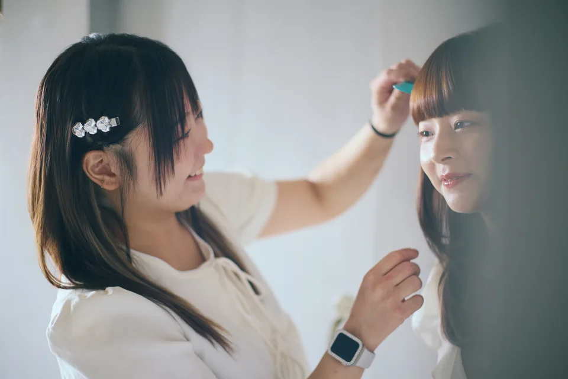
似合わせの知識髪型や色が似合う理由を説明する。
カウンセリング悩みや希望を聞き、施術を提案する。
次回のご来店に向けてお手入れ方法や来店時期を伝える。
「150万ロングセラー美容師」は、
お客様から継続して支持される美容師を目指す考え方です。
150万円は育成で目指す売上の目標であり、達成や給与を保証するものではありません。
150万スタイリスト撮影を通じた技術向上
撮影は、フィニッシュワークのスキル向上を目的に行っています。日々のサロンワークでの仕上げに活かしていきます。

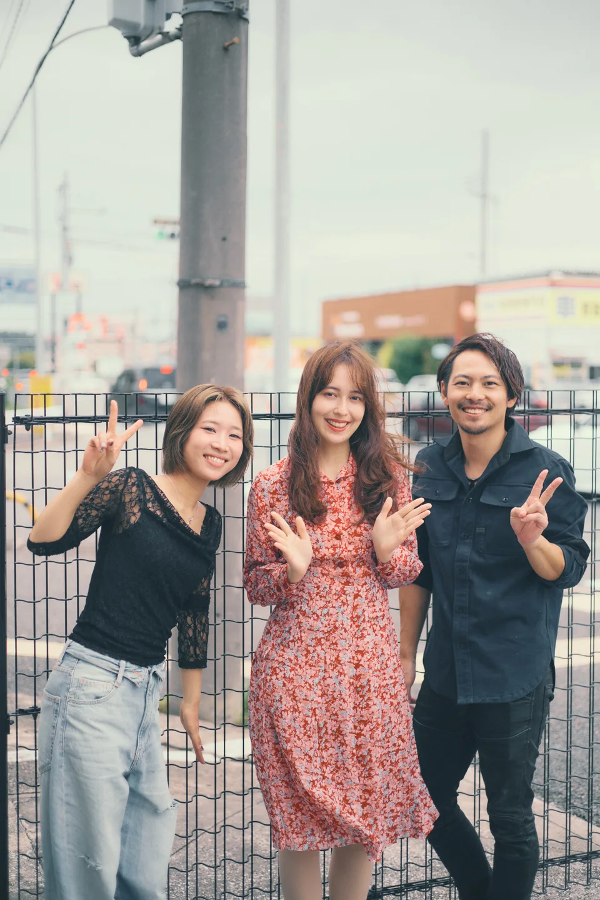
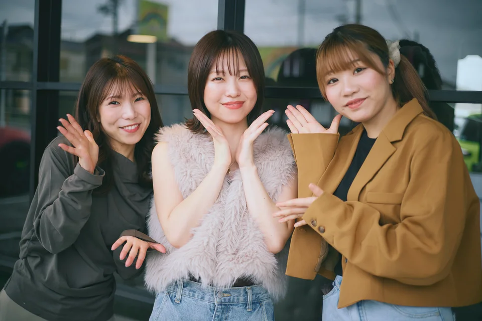

募集要項
スタイリスト・アシスタントを募集しています。
短時間勤務をご希望の方は、準社員制度もご覧ください。
24.5万〜27万＋歩合給＋能力給
salon LH / 正社員スタイリスト月給
23万〜25万円＋ケア指名＋店販手当
正社員アシスタント月給
勤務時間・休日・福利厚生など、その他の募集条件は下記の共通条件と同じです。
180,000円＋技術売上10%
基本給 / 勤務時間 9:00〜16:30
準社員制度を詳しく見る勤務時間・給与・対象条件を確認平均退社時間は毎日の退社時刻を保証するものではありません。歩合の具体的な計算方法や休日の取り方など、気になる条件はご相談ください。
スタイリスト・アシスタント共通の条件です。スタイリストの応募にはスタイリスト経験が必要です（経験年数不問）。
サロン見学・ご相談
店内やスタッフが働く様子をご覧いただけます。
仕事内容や給与、勤務時間についても、その場でご質問ください。
見学してから応募するかどうかを決めていただけます。
フォームで希望店舗・日時をお送りください。
確認後、1週間以内にご連絡し、日程を調整します。
所要時間や持ち物も、そのときにご確認ください。
見学フォームは専門学校名の入力が必須です。連絡先にはフォームの案内に沿ってGmailをご記入ください。入力に迷う場合はLINEでご相談いただけます。
はい。情報収集や質問だけでも歓迎しています。まずは気になることをLINEでお送りください。
はい。月給23万〜25万円＋ケア指名＋店販手当で募集しています。その他の勤務条件・福利厚生は正社員の共通条件と同じです。相談時にアシスタント希望とお知らせください。
9:00〜16:30の準社員制度があります。制度の内容をご覧のうえ、ご希望の働き方をご相談ください。
準社員制度を見る
給与の内訳・歩合の計算方法、休日の取り方、教育の時間や費用、店舗ごとの募集状況など、気になる条件をお聞きください。
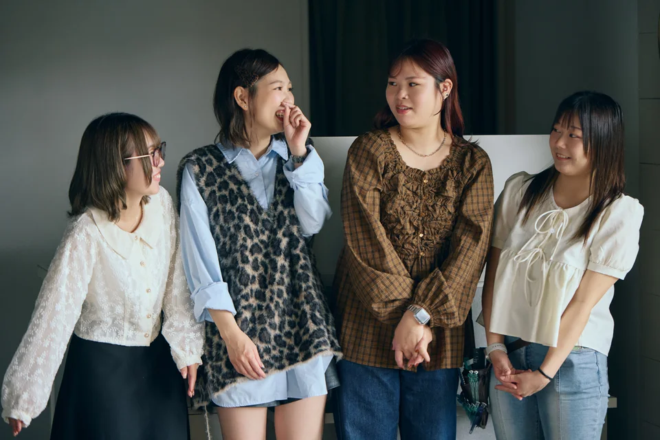
見学・ご相談を受け付けています
転職を検討中の方も歓迎しています。
希望の店舗や勤務条件について、
フォームまたはLINEでご相談ください。